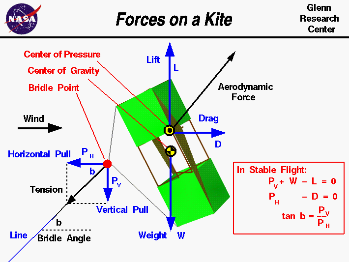

|

An excellent way for students to gain a feel for
aerodynamic forces
is to fly a
kite.
Kites can
fly
because of the forces acting on the
parts
of the kite.
Though kites come in many
shapes
and sizes, the
forces which act on a kite are
the same for all kites and are
shown on this slide. You can compare these forces to the
forces acting on an airliner in
flight and you will find that, with the tension
substituting for thrust, they are
exactly the same.
The similarity in forces allowed the
Wright brothers
to test their theories of flight by flying their
aircraft
as
kites from 1900 to 1902.
This page shows a free body diagram of the kite.
In a free body diagram, we draw a single object and all of the
forces which act on that object. Forces are
vectors
having both a magnitude and a direction, so we draw each force as an arrow
with the length proportional to the magnitude and the head of the arrow
pointing in the direction of the force. An important property of vectors
is that they can be
broken down
into perpendicular components, and we can
develop scalar equations in each component direction.
On the page, there are three
principle forces acting on the kite; the
weight,
the tension in the
line,
and the
aerodynamic force.
The weight W always acts from the
center of gravity
toward the center of the earth.
The aerodynamic force is
usually broken into two components (shown in blue); the
lift L, which acts perpendicular to the wind,
and the
drag D, which acts in the direction of the wind.
The aerodynamic force acts through the
center of pressure.
Near the ground, the wind may swirl and gust because of turbulence in
the earth's
boundary layer.
But away from the ground, the wind is fairly constant and parallel to the
surface of the earth. In this case, the lift is directly opposed to the
weight of the kite, as shown in the figure.
The tension in the line acts through the
bridle point
where the
line is attached to the kite
bridle.
We break the tension into two components, the vertical pull Pv,
and the horizontal pull Ph.
When the kite is in stable flight the forces remain constant and there is
no net external force acting on the kite, from Newton's
first law of motion.
In the vertical direction, the sum of the forces is zero. So,
the vertical pull plus the weight minus the lift is equal to zero.
Pv + W - L = 0
In the horizontal direction, the sum of the horizontal pull and the drag
must also equal zero.
Ph - D = 0
With some knowledge of the kite geometry and the velocity of the wind,
we can determine
the value of the lift and drag.
And with knowledge of the kite geometry and the materials used to make the
kite we can determine the weight.
We can then solve the two equations given above for the horizontal and
vertical components of the tension in the line.
Near the bridle point, the line is inclined at an angle called the
bridle angle b. The magnitude of this angle is related to the
relative magnitude of the components of the tension.
tan b = Pv / Ph
where tan is the trigonometric
tangent function.
Knowing the bridle angle, the length of line, and the weight per length
of line, you can
predict
the height at which the kite flies.
You can use the
KiteModeler program to solve all
the equations shown on this slide.
The relative strength of the forces determines the motion of the
kite as described by Newton's
laws of motion.
If a gust of
wind strikes the kite, the lift and drag increase. The kite
then moves vertically because the lift now exceeds the weight and
the vertical pull, and the tension force increases because of increased
drag. Eventually a new balance
point is established and the kite achieves a different stable condition.
Because of the change in relative strength of the aerodynamic and weight
forces, the kite also rotates about the bridle point to balance the
torques.
Activities:
Guided Tours
-
 Forces on a Kite:
Forces on a Kite:

-
KiteModeler
Navigation ..


- Beginner's Guide Home Page
|